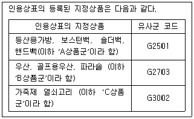
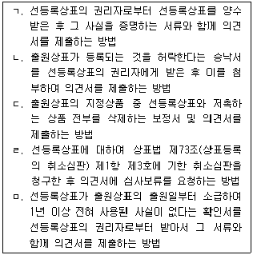

변리사-1차(1교시) (2012-02-26 기출문제)
1. 특허법 제135조(권리범위확인심판)와 관련된 설명으로 옳은 것은? (다툼이 있는 경우에는 판례에 의함)
- 권리범위확인심판에서 특허발명의 특허청구범위가 기능적 표현으로 기재된 경우, 청구범위를 문언 그대로 해석하는 것이 명세서의 다른 기재에 비추어 보아 명백히 불합리하더라도 특허권의 권리범위를 제한하여 해석할 수 없다.
- 확인대상발명의 설명서에 특허발명의 구성요소와 대응하는 구체적인 구성이 일부 기재되어 있지 않거나 불명확한 부분이 있다면, 나머지 구성만으로 확인대상발명이 특허발명의 권리범위에 속하는지 여부를 판단할 수 있더라도 확인대상발명은 특정되어 있다고 볼 수 없다.
- 물건을 생산하는 방법의 발명인 경우에는 그 방법에 의하여 생산된 물건에까지 특허권의 효력이 미치므로, 특정한 생산방법에 의하여 생산한 물건을 실시발명으로 특정하여 특허권의 보호범위에 속하는지 여부의 확인을 구할 수 있다.
- 권리범위확인심판에서 특허발명이 선출원주의를 위반한 경우에는 반드시 확인대상발명과 대비하여 권리범위를 인정할 수 있는지 여부를 판단하여야 한다.
- 확인대상발명의 자유실시기술 여부를 판단할 때 확인대상발명을 특허발명과 대응되는 기술구성으로 한정하여 파악하여야 하고, 확인대상발명 전체를 가지고 판단하여서는 안 된다.
(정답률: 알수없음)

2. 심판청구방식에 관한 설명으로 옳지 않은 것은?
- 심판청구서에 기재한 당사자 중 특허권자의 기재를 바로잡기 위하여 보정(추가하는 것을 포함한다)하는 경우는 요지변경이 아니다.
- 적극적 권리범위확인심판에서 확인대상발명의 설명서 및 도면에 대하여 피청구인이 자신이 실제로 실시하고 있는 발명과 비교하여 다르다고 주장하는 경우, 청구인이 피청구인의 실시 발명과 동일하게 하기 위하여 확인대상발명의 설명서 및 도면을 보정하는 것은 요지변경이 아니다.
- 특허무효심판의 심판청구서에 기재한 청구의 취지 및 그 이유를 나중에 보정한 경우는 요지변경이 아니다.
- 권리범위확인심판을 청구하면서 확인대상발명의 설명서 및 필요한 도면을 첨부하지 아니한 경우, 심판장은 기간을 정하여 보정을 명하여야 한다.
- 청구의 취지가 특정되지 않는 경우에 심판장은 기간을 정하여 그 보정을 명하고 이에 응하지 않을 때는 심판청구서를 결정으로 각하하여야 한다.
(정답률: 알수없음)
3. 다음 설명 중 옳지 않은 것은? (다툼이 있는 경우에는 판례에 의함)
- A회사가 상관습상 비밀유지의무를 부담하는 B회사의 직원에게 배포한 기술이전 교육용 자료에 발명의 내용이 게재되었다면 이 발명은 공지된 것으로 본다.
- 원출원과 분할출원의 동일성 여부의 판단은 특허청구범위에 기재된 양 발명의 기술적 구성이 동일한가 여부에 의하여 판단하되 그 효과도 참작하여야 하고, 기술적 구성에 차이가 있더라도 그 차이가 주지 관용기술의 부가, 삭제, 변경 등으로 새로운 효과의 발생이 없는 정도에 불과하다면 양 발명은 서로 동일하다.
- 불특정인에게 공장을 견학시킨 경우 해당 기술 분야에서 통상의 지식을 가진 자가 제조상황을 보고 그 기술내용을 알 수 있는 상태에 있다면 이는 공연히 실시된 것으로 본다.
- 소위 선택발명의 신규성을 부정하기 위해서는 선행발명이 선택발명을 구성하는 하위개념을 구체적으로 개시하고 있어야 한다.
- 출원발명의 청구항의 구성요소가 A, B, C라고 할 경우, 출원 전에 공개된 인용 발명 X가 구성요소 A, B, C를 모두 포함하고 있다면 출원발명은 인용발명 X에 의해서 신규성이 상실된다.
(정답률: 알수없음)
4. 선출원주의에 관한 설명으로 옳지 않은 것은? (다툼이 있는 경우에는 판례에 의함)
- 동일인이 동일한 발명에 대하여 특허와 실용신안을 같은 날에 출원하여 모두 등록된 경우, 등록된 특허권이나 실용신안권 중 어느 하나가 포기되면 경합출원으로 인한 하자는 치유된다.
- 특허법 제36조(선출원)를 적용하기 위한 전제로서 두 발명이 서로 동일한 발명인지 여부는 대비되는 두 발명의 실체를 파악하여야 하므로, 대비되는 두 발명이 각각 물건의 발명과 방법의 발명으로 서로 발명의 범주가 다르다고 하여 곧바로 동일한 발명이 아니라고 단정할 수 없다.
- 특허출원이 무효, 취하 또는 포기된 경우에는 선출원의 지위가 인정되지 아니한다.
- 동일한 발명에 대하여 다른 날에 2 이상의 출원이 있는 경우에는 먼저 출원한 자만이 그 발명에 대하여 특허를 받을 수 있다.
- 동일인이 동일고안에 대하여 같은 날에 경합출원을 하여 모두 등록이 된 경우에 그 후 어느 한쪽의 등록이 무효로 확정되었다면 나머지 등록을 유지, 존속시켜 주는 것이 타당하고 당초에 경합출원이었다는 사실만으로 나머지 등록까지 모두 무효로 되는 것은 아니다.
(정답률: 알수없음)
5. 실용신안등록출원에 관한 설명으로 옳지 않은 것은?
- 실용신안등록출원이 물품의 형상ㆍ구조ㆍ조합에 관한 고안인 경우에 실용신안등록출원서에 도면을 첨부하여야 한다.
- 핵산염기 서열 또는 아미노산 서열을 포함한 실용신안등록출원을 하려는 자는 서열목록을 첨부한 명세서를 특허청장에게 제출하여야 한다.
- 국제실용신안등록출원을 외국어로 출원한 출원인은 특허협력조약 제2조(xi)의 우선일부터 2년 7월 이내에 국제출원일에 제출한 명세서, 청구의 범위, 도면(도면 중 설명부분에 한한다) 및 요약서의 국어 번역문을 특허청장에게 제출하여야 한다.
- 국제실용신안등록출원의 출원인은 국제출원일에 제출한 국제출원이 도면을 포함하지 아니한 경우에는 기준일까지 도면(도면에 관한 간단한 설명을 포함한다)을 특허청장에게 제출하여야 한다.
- 실용신안등록출원인은 실용신안등록출원과 동시에 심사청구를 하고 그 출원일 후 3개월 이내에 우선심사를 신청하여야 우선심사의 대상이 된다.
(정답률: 알수없음)
6. 특허를 받을 수 있는 권리에 관한 설명으로 옳지 않은 것은? (다툼이 있는 경우에는 판례에 의함)
- 특허출원전에 있어서 특허를 받을 수 있는 권리의 양도는 양수인이 출원하지 않는 한 제3자에게 대항할 수 없다.
- 특허를 받을 수 있는 권리가 공유인 경우 공유자 중 일부에 의한 출원은 거절되며, 심판청구도 공유자 전원이 하여야 한다.
- 동일한 자로부터 승계한 동일한 특허를 받을 수 있는 권리에 대하여 같은 날에 2 이상 특허출원이 있는 때에는 특허출원인의 협의에 의해 정한 자의 승계만이 효력을 갖는다.
- 특허를 받을 수 있는 권리의 양도계약에 따라 양수인 명의로 출원인명의변경이 이루어지고 양수인이 특허권의 설정등록을 받은 경우, 그 양도계약이 무효나 취소 등의 사유로 효력을 상실하게 되는 때에 그 특허를 받을 수 있는 권리와 설정등록이 이루어진 특허권이 동일한 발명에 관한 것이라도 양도인은 양수인에 대하여 그 특허권에 관하여 이전등록을 청구할 수 없다.
- 제2양수인이 특허를 받을 권리가 이미 제1양수인에게 양도된 사실을 잘 알면서도 양도인과 위 권리의 이중양도계약을 체결하여 그 이중양도행위에 적극적으로 가담한 경우, 이중양도계약에 기한 특허를 받을 권리의 양도행위는 반사회적 법률행위로서 무효이므로 제2양수인이 이중양도계약에 근거하여 출원한 특허발명의 등록은 무효로 되어야 한다.
(정답률: 알수없음)
7. 특허청구범위의 기재에 관한 설명으로 옳지 않은 것은? (다툼이 있는 경우에는 판례에 의함)
- 의약에 있어서는 그 작용효과(의학적 효과)에 대한 객관적인 기재가 명세서기재의 필수적인 요건이므로, 발명의 상세한 설명에 특허청구범위를 이루는 발명의 작용효과에 대한 기재가 없다면 명세서의 기재불비에 해당한다.
- 특허의 명세서에 기재된 용어는 명세서에 그 용어를 특정한 의미로 정의하여 사용하고 있지 않은 이상, 당해 기술 분야에서 통상의 지식을 가진 자에게 일반적으로 인식되는 용어의 의미에 따라 명세서 전체를 통하여 통일되게 해석되어야 한다.
- 특허청구범위가 상세한 설명에 의하여 뒷받침되고 있는지 여부는 특허출원 당시의 기술 수준을 기준으로 하여 그 발명과 관련된 기술분야에서 평균적 기술 능력을 가진 사람의 입장에서 볼 때, 그 특허청구범위와 발명의 상세한 설명의 각 내용이 일치하여 그 명세서만으로 특허청구범위에 속한 기술구성이나 그 결합 및 작용효과를 일목요연하게 이해할 수 있는가에 의하여 판단하여야 한다.
- 동일한 발명사상의 내용이 청구항을 달리하여 중복하여 기재되어 있다면, 특허청구의 범위가 명확하고 간결하게 기재되어 있어 당해 기술분야에서 통상의 지식을 가진 자가 그 내용을 명확하게 이해하고 인식하여 재현할 수 있더라도 명세서의 기재불비에 해당한다.
- 명세서에서 출원서에 첨부된 도면을 들어 당해 발명의 특정한 기술구성 등을 설명하고 있는 경우 그 명세서에서 지적한 도면에 당해 기술구성이 전혀 표시되어 있지 않아 그 기술구성이나 결합관계를 알 수 없다면, 비록 그러한 오류가 출원서에 첨부된 여러 도면의 번호를 잘못 기재함으로 인한 것이고, 당해 기술분야에서 통상의 지식을 가진 자가 명세서 전체를 면밀히 검토하면 출원서에 첨부된 다른 도면을 통하여 그 기술구성 등을 알 수 있다 하더라도 특허명세서의 기재불비라고 할 수 있다.
(정답률: 알수없음)
8. 특허에 관한 소송의 관할과 관련된 설명으로 옳지 않은 것은? (다툼이 있는 경우에는 판례에 의함)
- 심결에 대한 소 및 심판청구서나 재심청구서의 각하결정에 대한 소는 특허법원의 전속관할로 한다.
- 통상실시권허여심판에서 정한 대가의 심결 및 심판비용의 심결 또는 결정에 대하여는 독립하여 특허법원에 소를 제기할 수 있다.
- 특허권은 등록국법에 의하여 발생하는 권리이므로, 우리나라 법원은 다른 국가의 특허권 부여행위와 그 행위의 유효성에 대하여 판단할 수 없다.
- 특허권의 성립에 관한 것이거나 유ㆍ무효 또는 취소 등을 구하는 소는 일반적으로 등록국 또는 등록이 청구된 국가 법원의 전속관할에 속하는 것으로 볼 수 있다.
- 특허권 등을 양도하는 계약의 해석과 효력 유무만이 주된 분쟁 및 심리의 대상인 경우, 그 양도계약의 이행을 구하는 소는 등록국이나 등록이 청구된 국가 법원의 전속관할에 속하는 것으로 볼 수 없다.
(정답률: 알수없음)
9. 특허권 침해의 구제에 관한 설명으로 옳은 것은? (다툼이 있는 경우에는 판례에 의함)
- 회사 임원의 직무발명에 관하여 회사 등이 그 임원을 배제한 채 회사 명의의 특허등록을 마친 경우, 위 임원이 입은 재산상 손해액의 산정 시에는 특허법 제128조(손해액의 추정등) 제2항을 유추적용 할 수 있다.
- 특허법 제128조(손해액의 추정등) 제2항은 특허권자에게 손해가 발생한 경우에 그 손해액을 평가하는 방법을 정한 것에 불과하여 침해행위에도 불구하고 특허권자에게 손해가 없는 경우에는 적용되지 않지만, 손해의 발생에 관한 주장ㆍ입증의 정도에 있어서는 경업관계 등으로 인하여 손해 발생의 염려 내지 개연성이 있음을 주장ㆍ입증하는 것으로 충분하다.
- 특허법에서는 “법원은 특허권 또는 전용실시권의 침해에 관한 소송에 있어서 손해가 발생된 것은 인정되나 그 손해액을 입증하기 위하여 필요한 사실을 입증하는 것이 해당 사실의 성질상 극히 곤란한 경우에는 변론 전체의 취지와 증거조사의 결과에 기초하여 상당한 손해액을 인정할 수 있다”고 하여 법관에게 손해액 산정에 관하여 자유재량권을 부여하고 있다.
- 특허권의 존속기간이 경과하였더라도 특허권자는 소멸된 특허권을 기초로 하여 손해배상, 특허침해금지 및 특허침해제품의 폐기를 청구할 수 있다.
- 특허침해행위로 인한 수입액에서 그에 상응하는 비용을 공제하는 방법으로 특허법 제128조(손해액의 추정등) 제2항에 의한 특허권자의 손해액을 산정함에 있어서, 비용산출의 계산방식은 자백의 대상이다.
(정답률: 알수없음)
10. 직무발명에 대한 통상실시권의 설명으로 옳지 않은 것은? (다툼이 있는 경우에는 판례에 의함)
- 발명진흥법 제10조(직무발명) 제1항에 따른 통상실시권을 취득하게 되는 사용자는 그 피용자나 종업원이 직무발명을 완성할 당시의 사용자이다.
- 특허권자는 발명진흥법 제10조(직무발명) 제1항에 따른 통상실시권자의 동의를 얻지 아니하면 특허권을 포기할 수 없다.
- 발명진흥법 제10조(직무발명) 제1항에 따른 통상실시권은 법률의 규정에 의하여 특허권의 설정등록시부터 당연히 발생하며, 그 통상실시권을 등록하지 않아도 특허권 설정등록 이후에 특허권을 취득한 자에게 대하여도 효력을 갖는다.
- 발명진흥법 제10조(직무발명) 제1항에 따른 통상실시권자는 특허권자의 동의를 얻지 아니하면 그 통상실시권을 목적으로 하는 질권을 설정할 수 없다.
- 발명진흥법 제10조(직무발명) 제1항에 따른 통상실시권의 이전ㆍ변경ㆍ소멸 또는 처분의 제한은 이를 등록하지 아니하더라도 제3자에게 대항할 수 있다.
(정답률: 알수없음)
11. 甲은 발명의 상세한 설명에 발명 A, B, C를 기재하고 청구항 1에 발명 A, 청구항 2에 발명 B를 기재하여 특허출원 X를 했다. 乙은 甲의 출원일 후에 발명의 상세한 설명 및 청구항 1에 발명 C를 기재하여 특허출원 Y를 했다. 甲은 乙의 출원일 후에 발명의 상세한 설명 및 청구항 1에 발명 C를 기재하여 특허출원 X를 기초로 분할출원 Z를 했다. 다음 설명 중 옳은 것은? (단, 특허출원 X와 Y의 발명자는 동일인이 아니며, 주어진 사항 이외는 고려하지 않는다.)
- 甲의 분할출원 Z가 乙의 출원일 후에 출원 공개되면, 乙의 특허출원 Y는 甲의 분할출원 Z의 소위 확대된 선출원의 지위로 인하여 거절될 수 있다.
- 甲의 특허출원 X는 발명 C가 삭제 보정되었고, 특허출원 Y의 출원일 후에 공개되었다. 이 경우 乙의 특허출원 Y는 甲의 특허출원 X의 확대된 선출원의 지위로 인하여 거절될 수 있다.
- 분할출원 Z의 출원일 후에 甲이 발명 A, B, C, D에 관하여 특허출원 X를 기초로 하는 국내우선권주장 특허출원을 한 경우에, 乙의 특허출원 Y는 특허를 받을 수 있다.
- 특허출원 Y의 출원일 후 특허출원 X의 출원공개 전에, 甲이 특허 받을 수 있는 권리를 乙에게 양도한 경우 특허출원 X는 특허출원 Y에 대하여 확대된 선출원의 지위를 가지지 못한다.
- 甲이 분할출원 Z의 출원일 전에 특허출원 X에서 발명 C를 삭제하는 보정을 한 상태에서 특허출원 X를 기초로 하는 국내우선권주장 특허출원을 한 경우, 乙의 특허출원 Y는 특허를 받을 수 있다.
(정답률: 알수없음)
12. 특허권의 소멸사유에 관한 설명으로 옳은 것은?
- 전시, 사변 또는 이에 준하는 비상시에 있어서 국방상의 필요를 이유로 특허권이 수용된 경우, 그 특허발명에 관한 전용실시권이나 통상실시권은 소멸되지만 특허권까지 소멸되는 것은 아니다.
- 특허권의 상속인이 없는 경우 그 상속이 개시된 때 그 특허권은 소멸하며, 이는 공유의 특허권자 중 일부가 상속인 없이 사망한 경우에도 그러하다.
- 특허청구범위에 청구항이 2 이상인 경우 청구항별로 특허권을 포기하는 것이 가능하며, 특허권의 포기가 있는 때에는 그 특허권은 처음부터 없었던 것으로 본다.
- 특허심판원의 심결 또는 법원의 판결에 의하여 특허권이 무효로 확정된 경우, 그 때부터 그 특허권은 없었던 것으로 본다.
- 특허권은 존속기간의 만료로 소멸하는 것이 원칙이지만, 의약품과 같이 다른 법령의 규정에 의한 허가를 받기 위하여 장기간이 소요되는 때에는 특허권자나 전용실시권자에 의한 존속기간의 연장등록출원이 가능하다.
(정답률: 알수없음)
13. 선출원 특허권자 甲은 접착제에 관한 발명에 대해서 특허권을 획득했다. 후출원 특허권자 乙은 甲의 특허발명인 접착제가 자신이 새로 개발한 집광필름의 접합방법에 가장 적합한 것을 실험을 통해 알아내고, 甲의 특허발명인 접착제를 그 대로 사용하여 기존보다 효과가 뛰어난 집광필름에 관한 발명에 대하여 특허를 획득했다. 다음 설명 중 옳은 것은?
- 乙이 자기 특허발명을 실시하기 위해서 甲이 판매하는 특허발명 제품인 접착제를 구입하여 집광필름을 생산ㆍ판매하고자 할 경우, 乙은 甲을 상대로 통상실시권허여심판을 청구하여 통상실시권을 허여 받아야 한다.
- 乙이 자기 특허발명을 실시하기 위해서 丙에게 甲의 특허발명 제품인 접착제를 제조하여 납품하게 하고, 丁이 제조한 프리즘시트를 납품받아서 자기 특허발명인 집광필름을 제조ㆍ판매하고자 할 경우, 丙은 접착제를 제조하기 위해서 甲을 상대로 통상실시권허여심판을 청구하여 통상실시권을 허여 받아야 한다.
- 乙의 특허발명은 甲의 특허발명인 접착제와 새로운 접합방법의 상호작용에 의한 이용발명이므로, 乙은 甲의 특허권과 관계없이 자기 특허발명을 자유롭게 실시할 수 있다.
- 乙이 자기 특허발명을 실시하기 위해서 甲을 상대로 소극적 권리범위확인심판을 청구하여 기각심결을 받은 경우, 그 심결만을 기초로 하여 甲을 상대로 통상실시권허여심판을 청구할 수 있다.
- 乙이 甲을 상대로 통상실시권 허여의 심판을 통해 통상실시권을 획득한 경우, 乙의 허락이 없더라도 甲은 통상실시권 허여의 심결에 의하여 집광필름을 실시할 수 있다.
(정답률: 알수없음)
14. 실시권에 관한 설명으로 옳지 않은 것은? (다툼이 있는 경우에는 판례에 의함)
- 특허출원시에 그 특허출원된 발명의 내용을 알지 못하고 그 발명을 하거나 그 발명을 한 자로부터 지득하여 국내에서 그 발명의 실시사업을 하거나 그 사업의 준비를 하고 있는 자는 그 실시 또는 준비를 하고 있는 발명 및 사업의 목적의 범위안에서 그 특허출원된 발명에 대한 특허권에 대하여 통상실시권을 가진다.
- 전용실시권자는 실시사업과 같이 이전하거나 또는 상속 기타 일반승계의 경우에는 특허권자의 동의가 없더라도 그 전용실시권을 이전할 수 있다.
- 전용실시권자는 전용실시권에 대한 질권 또는 통상실시권이 설정된 때에는 질권자 또는 통상실시권자의 동의가 없는 한 그 전용실시권을 포기할 수 없다.
- 물품의 일부에 대한 실용신안권의 경우, 통상실시권자가 실용신안권의 존속기간내에 제작이 완료된 실용신안 대상 부품을 사용하여 완성한 물품을 그 존속기간이 끝난 후에 출고한 경우에는 그 실시료를 지급할 의무가 없다.
- 실용신안에 대한 통상실시권은 실용신안권의 존속을 전제로 하는 권리이므로 실용신안권이 그 존속기간의 만료로 소멸한다면 이에 따른 통상실시권도 함께 소멸한다.
(정답률: 알수없음)
15. 보정에 관한 설명으로 옳은 것은?
- 청구항 1에 대한 기재불비의 이유로 최초 의견제출통지서를 받아 기재불비를 해소시키는 보정을 한 출원에 대해서, 심사관이 보정에 의하여 발생한 거절이유가 아닌 발명의 진보성 결여를 이유로 거절이유를 통지한 경우 이는 최후거절이유가 된다.
- 하나의 청구항에 기재된 2 이상의 발명 중 일부에 대해서 의견제출통지서를 받아 이를 해소시키기 위한 보정을 했고 심사관이 그 청구항의 나머지 발명에 대해서 다시 거절이유를 통지한 경우 이는 최초거절이유통지에 해당한다.
- 최초거절이유를 통지할 때에는 외국인으로서 권리능력에 관한 흠결이 없었으나 보정 이후 특허에 관한 권리를 향유할 수 없게 된 경우 최후거절이유를 통지하여야 한다.
- 진보성 결여를 이유로 거절이유를 통지 받은 청구항 1에 구성요소를 추가하는 보정을 하여 거절이유를 해소한 상태에서, 심사관이 새로운 선행기술을 제시하면서 청구항 1에 대하여 진보성 결여를 이유로 거절이유를 통지했을 때 이는 최초거절이유가 된다.
- 기재불비를 이유로 거절이유가 통지되어 이를 해소하는 보정을 한 결과 발명의 진보성 결여의 거절이유가 발생한 경우 이는 최초거절이유가 된다.
(정답률: 알수없음)
16. 다음 설명 중 옳지 않은 것은? (다툼이 있는 경우에는 판례에 의함)
- 발명자가 아닌 사람으로서 특허를 받을 수 있는 권리의 승계인이 아닌 사람이 발명자가 한 발명의 구성을 일부 변경하여 발명자의 발명과 기술적 구성이 상이하게 되었으나 기술적 사상의 창작에 실질적으로 기여하지 않은 경우, 그 특허등록은 무권리자의 특허출원에 해당한다.
- 특허의 권리범위확인심판 청구에서 심판청구대상이 되는 확인대상발명의 특정 정도 및 확인대상발명의 일부 구성이 불명확하여 다른 것과 구별될 수 있는 정도로 구체적으로 특정되어 있지 않은 경우, 심판장은 기간을 정하여 보정을 명하여야 한다.
- 출원발명에 대하여 우선권주장의 불인정으로 발생한 거절이유를 들어 특허거절결정을 하면서 우선권주장이 인정되지 않는다는 취지 및 그 이유가 포함된 거절이유를 통지하지 않는 것은 적법하다.
- 소위 확대된 선출원에 관한 특허법 제29조(특허요건) 제3항에서 규정하는 발명의 동일성은 발명의 진보성과는 구별되는 것으로서 두 발명의 기술적 구성이 동일한가 여부에 의하되 발명의 효과도 참작하여 판단하여야 한다.
- 출원발명이 자연법칙을 이용한 것이 아닌 때에는 특허법 제29조(특허요건) 제1항 본문의 '산업상 이용할 수 있는 발명'의 요건을 충족하지 못함을 이유로 그 특허출원을 거절하여야 하고, 여기서 출원발명이 자연법칙을 이용한 것인지 여부는 청구항 전체로서 판단하여야 한다.
(정답률: 알수없음)
17. 甲은 일본 국내 특허출원이 없이 2009년 1월 30일에 일본특허청을 수리관청으로 하고 우리나라를 지정국으로 하여 특허협력조약에 의한 국제출원을 하였다. 다음 설명 중 옳은 것은? (단, 공휴일은 고려하지 않는다.)
- 甲이 2010년 10월 20일에 우리나라 특허청에 국제특허출원의 번역문을 제출한 경우, 2015년 10월 20일까지 심사청구를 하지 않으면 그 특허출원은 취하된 것으로 본다.
- 甲이 특허협력조약 제19조(1)에 의한 보정을 한 경우, 그 보정된 특허청구범위의 국어 번역문으로 국제출원일에 제출한 특허청구범위의 번역문을 대체할 수 있다.
- 甲이 우리나라 특허청에 번역문을 제출하고 심사청구를 한 경우, 국제특허출원에 대하여 특허법 제30조(공지 등이 되지 아니한 발명으로 보는 경우) 제1항 제1호의 적용을 받고자 할 경우에는 그 취지를 기재한 서면 및 그 증명서류를 번역문제출일부터 2개월 이내에 제출하여야 한다.
- 甲이 2011년 7월 30일까지 우리나라 특허청에 국제특허출원의 국어 번역문을 제출하지 않으면 그 국제특허출원은 취하된 것으로 간주한다.
- 甲은 우리나라 특허청에 수수료를 납부하고 번역문을 제출하였더라도 기준일 이전에는 명세서 또는 청구범위에 대한 보정을 할 수 없다.
(정답률: 알수없음)
18. 특허의 정정에 관한 설명으로 옳지 않은 것은? (다툼이 있는 경우에는 판례에 의함)
- 특허무효심판절차에서 정정청구의 인정 여부는 특별한 사정이 없는 한 청구항별로 판단하여야 한다.
- 특허무효심판의 피청구인은 특허청구범위를 실질적으로 확장하거나 변경하지 아니하는 범위 내에서 명세서 또는 도면에 대하여 정정을 청구할 수 있다.
- 특허청구범위를 실질적으로 확장하거나 변경하는 경우에 해당하는지 여부는 특허청구범위 자체의 형식적인 기재만이 아니라 발명의 상세한 설명을 포함하여 명세서 전체의 내용과 관련하여 그 정정 전후의 특허청구범위 전체를 실질적으로 대비하여 판단되어야 한다.
- 특허권을 침해하는 제품을 생산ㆍ판매한 후에 특허발명의 특허청구범위를 정정하는 심결이 확정되었더라도 정정심결의 확정 전ㆍ후로 특허청구범위에 실질적인 변경이 없으므로, 특허법 제130조(과실의 추정)에 의해 특허권 침해행위에 과실이 있는 것으로 추정하는 법리는 정정을 전ㆍ후로 하여 그대로 유지된다.
- 특허무효심판절차에서 정정청구가 있는 경우, 정정의 인정 여부는 무효심판절차에서 함께 심리되는 것이므로 독립된 정정심판청구의 경우와 달리 정정청구 부분은 따로 확정되지 아니하고 무효심판의 심결이 확정되는 때에 함께 확정된다.
(정답률: 알수없음)
19. 심결취소소송에 관한 설명으로 옳지 않은 것은? (다툼이 있는 경우에는 판례에 의함)
- 행정소송의 일종인 심결취소소송에 직권주의가 가미되어 있다고 하더라도 여전히 변론주의를 기본 구조로 하는 이상, 법원이 당사자가 주장하지도 않은 법률요건에 관하여 판단하는 것은 변론주의 원칙에 위배되는 것이다.
- 심결취소소송을 제기한 후에 당사자 사이에 소를 취하하기로 하는 합의가 이루어졌다면 특별한 사정이 없는 한 소송을 계속 유지할 법률상의 이익이 소멸하여 당해 소는 각하되어야 한다.
- 특허심판단계에서 하지 않았던 주장을 심결취소소송 단계에서 주장하는 경우에 금반언 내지 신의칙 위반이다.
- 주지관용의 기술이 소송상 공지 또는 현저한 사실이라고 볼 수 있을 만큼 일반적으로 알려져 있지 아니한 경우에 그 주지관용의 기술은 심결취소소송에 있어서는 증명을 필요로 하나, 법원은 자유로운 심증에 의하여 증거 등 기록에 나타난 자료를 통하여 주지관용의 기술을 인정할 수 있다.
- 권리범위확인심판의 심결취소소송에서 당사자는 심결에서 판단되지 않은 처분의 위법사유도 심결취소소송단계에서 주장ㆍ입증할 수 있고, 심결취소소송의 법원은 특별한 사정이 없는 한 제한 없이 이를 심리ㆍ판단하여 판결의 기초로 삼을 수 있다.
(정답률: 알수없음)
20. 다음 설명 중 옳지 않은 것은? (다툼이 있는 경우에는 판례에 의함)
- 의약화합물 분야에서 선행발명에 공지된 화합물과 결정 형태만을 달리하는 특정결정형의 화합물을 특허청구범위로 하는 경우, 특별한 사정이 없는 한 선행발명에 공지된 화합물이 갖는 효과와 질적으로 다른 효과를 갖고 있거나 질적인 차이가 없더라도 양적으로 현저한 차이가 있는 경우에는 진보성이 부정되지 않는다.
- 특허법 제30조(공지 등이 되지 아니한 발명으로 보는 경우) 제1항 제1호의 규정에 해당한다는 취지가 특허출원서에 기재되어 있지 아니한 채 출원된 경우에는 그 후 그 취지를 기재한 서면을 제출하였다고 하더라도 출원발명에 대하여 특허법 제30조 제1항 제1호가 적용될 수 없다.
- 소위 수치한정발명에 있어, 그 특허발명의 과제 및 효과가 공지된 발명의 연장선상에 있고 수치한정의 유무에서만 차이가 있는 경우에는 그 한정된 수치범위 내외에서 현저한 효과의 차이가 생기지 않는다면 단순한 수치한정에 불과하여 진보성이 부정된다.
- 물건 발명의 특허청구범위에 그 물건을 제조하는 방법이 기재되어 있다고 하더라도 그 제조방법에 의해서만 물건을 특정할 수밖에 없는 등의 특별한 사정이 없는 이상, 당해 특허발명의 진보성 유무를 판단함에 있어서는 그 제조방법 자체는 고려할 필요 없이 그 특허청구범위의 기재에 의하여 물건으로 특정되는 발명만을 그 출원 전에 공지된 발명 등과 비교하면 된다.
- 특허법 제29조(특허요건) 제1항 제1호 소정의 '특허출원 전에 국내 또는 국외에서 공지되었거나 공연히 실시된 발명'에서 '특허출원 전'의 의미는 그 공지 또는 공연히 실시된 사실을 인정하기 위한 증거가 특허출원 전에 작성된 것을 의미한다.
(정답률: 알수없음)
21. 상표 및 상표의 사용에 관한 설명으로 옳은 것은? (다툼이 있는 경우에는 판례에 의함)
- 상표법 제66조(침해로 보는 행위) 제1항 제1호에 규정된 등록상표와 유사한 상표에는 그 등록상표와 유사한 상표로서 색채를 등록상표와 동일하게 하면 등록상표와 동일한 상표라고 인정되는 상표까지도 포함하는 것으로 한다.
- “상표의 사용”이라 함은 상품 또는 상품의 포장에 상표를 표시하는 행위를 말하므로 상품 또는 상품의 포장 자체를 표장의 형상으로 하는 것은 상표로서 사용에 포함되지 아니한다.
- 소송 등을 통하여 상표권을 행사하는 경우 상표법 제2조(정의) 제1항 제6호에서 규정하는 상표의 사용이라고 할 수 없을 뿐만 아니라 방위적 목적의 상표라고 하여 상표권 침해자에 대하여 상표권을 행사하여 온 것만으로는 불사용으로 인한 등록취소를 면할 수 없다.
- 등록상표와 동일 또는 유사한 상표가 표시되어 있고, 그 지정상품과 동일 또는 유사한 상품을 양도하기 위하여 소지하는 행위는 상표의 사용에 포함된다.
- 주문자상표 부착방식(이른바 OEM 방식)에 의한 상표의 사용이나 수출자유지역내에서 수출 목적으로만 등록상표가 부착된 상품을 제조하는 것은 국내에서의 상표 사용이라고 볼 수 없다.
(정답률: 알수없음)
22. 상표의 식별력에 관한 설명으로 옳은 것은? (다툼이 있는 경우에는 판례에 의함)
- 기술적 문자로 구성된 상표 중 일부의 도안화 정도가 문자의 기술적 또는 설명적인 의미를 직감할 수 없을만큼 문자인식력을 압도하여 일반인의 특별한 주의를 끌 정도의 상표라 할지라도 상표법 제6조(상표등록의 요건)의 기술적 표장에 해당하므로 식별력이 인정되지 않는다.
- 간단하고 흔한 도형의 조합이 반복되는 표장이라도 흔히 사용될 수 있는 것이라고 볼 수 없고, 지정상품의 특성을 기술하지 않는 경우에는 식별력이 있는 것으로 본다.
- 상표법 제6조(상표등록의 요건) 제1항 제7호에 해당하는 상표는 상표등록출원 전에 사용에 의해 식별력을 취득한 경우라도 상표등록을 받을 수 없다는 것이 판례의 입장이다.
- 그 상품의 산지 표시라 함은 해당 상품이 해당 지방에서 현실적으로 생산되고 있어야 하므로 과거에 생산되었거나 과거에 생산된 것으로 일반수요자가 인식하고 있는 것만으로는 산지 표시에 해당한다고 할 수 없다.
- 상표등록 후에 기술적 표장으로 된 상표라도 상표권 존속기간 갱신등록은 가능하나 상표권 존속기간 갱신등록 후 기술적 표장이라는 이유로 상표권 갱신등록 무효심판에 의해 무효로 될 수 있다.
(정답률: 알수없음)
23. 상표법상 국제상표등록출원에 관한 설명으로 옳은 것은?
- 국제상표등록출원에 대하여 출원시 특례의 적용을 받고자 하는 자는 그 취지를 기재한 서면 및 이를 증명할 수 있는 서류를 국제등록일(사후지정의 경우에는 사후지정일)부터 30일 이내에 특허청장에게 제출하여야 한다.
- 국제상표등록출원의 상속 기타 일반승계가 있는 경우에는 승계인은 지체없이 그 취지를 특허청장에게 신고하여야 한다.
- 국제등록기초상표권의 상표권자는 전용사용권자ㆍ통상사용권자 또는 질권자의 동의를 얻지 아니하면 국제등록기초상표권을 포기할 수 없다.
- 재출원에 의해 설정등록된 상표에 대한 무효심판은 종전의 국제등록기초상표권에 대한 제척기간이 경과된 때에는 청구할 수 없다.
- 국제등록기초상표권자 또는 국제상표등록출원인은 국제등록기초상표 또는 국제상표등록출원의 지정상품을 추가하는 지정상품의 추가등록을 받을 수 있다.
(정답률: 알수없음)
24. 상표권에 관한 설명으로 옳지 않은 것은? (다툼이 있는 경우에는 판례에 의함)
- 상표법상 2개의 유사한 상표가 유사한 상품을 지정상품으로 하여 시기를 달리하여 각기 출원되어 등록되었다 하더라도 무효심판 등에 의하여 어느 일방의 권리가 소멸되지 않는 한 다같이 상표권으로서 보호를 받고 어느 일방의 사용이 다른 일방의 상표권에 대한 침해가 되지 않는다.
- 상표법 제57조의3(선사용에 따른 상표를 계속 사용할 권리)에서 규정하는 선사용자는 선사용에 따른 상표를 그 사용하는 상품에 대하여 계속하여 사용할 권리를 가진다.
- 등록상표가 그 상표등록출원일전에 발생한 타인의 저작권과 저촉되는 경우에도 지정상품중 저촉되는 지정상품에 대한 상표의 사용에 대해서 저작권자의 동의를 받으면 상표권자는 그 등록상표를 사용할 수 있다.
- 외국의 상표권자가 상표를 부착한 이후 거래 당사자 사이의 판매지 제한 약정에 위반하여 다른 지역으로 그 상품이 판매 내지 수출된 경우에 이러한 사정만으로 그 상품의 출처가 변하는 것은 아니지만, 그러한 약정 위반만으로도 외국 상표권자가 정당하게 부착한 상표는 위법하게 된다.
- 병행수입업자가 상표부착상품을 판매하는 행위는 물론 적극적으로 상표권자의 상표를 사용하여 광고ㆍ선전하는 행위를 하더라도 상표의 기능을 훼손할 우려가 없고 국내 일반 수요자들에게 상품의 출처나 품질에 관하여 오인ㆍ혼동을 불러일으킬 가능성이 없다면, 실질적으로 상표권 침해의 위법성이 없다고 보는 것이 판례의 입장이다.
(정답률: 알수없음)
25. 상표에 관한 심판 및 소송제도에 관한 설명으로 옳지 않은 것은? (다툼이 있는 경우에는 판례에 의함)
- 상표등록거절결정에 대한 불복심판에서 원거절결정의 이유와 다른 거절이유를 발견한 경우에는 심판관은 새로운 거절이유를 통지하고 의견서 제출기회를 주어야 한다.
- 상표등록무효심판을 청구할 수 있는 이해관계인에는 그 등록상표와 동일, 유사한 상표를 사용한 바 있거나 사용하고 있는 자 또는 등록된 상표의 지정상품과 동종의 업을 영위하고 있음으로써 등록상표의 소멸에 직접적인 이해관계가 있는 자가 포함된다.
- 일사부재리의 원칙에 있어서 “동일 사실”이라 함은 당해 상표권과의 관계에서 확정이 요구되는 구체적 사실이 동일함을 말하고, “동일 증거”라 함은 그 사실과 관련성을 가진 증거로서 전에 확정된 심결의 증거와 동일한 증거뿐만 아니라 그 확정된 심결을 번복할 수 있을 정도로 유력하지 아니한 증거까지 포함한다는 것이 판례의 입장이다.
- 손해배상의 민사본안소송이 제기된 후, 소극적 권리범위확인심판이 제기되어 기각심결이 내려졌고 위 민사본안소송의 1심 판결이 선고되었다 하더라도 상표권소멸 등 특별한 사정이 없는 한 권리범위확인심판의 심결취소소송은 소의 이익이 있다.
- 상표등록무효심판에서의 심결에 대한 취소소송을 담당하는 특허법원은 심결이 위법하다고 판단되면 이를 취소하고 환송하는 판결을 할 수 있을 뿐 아니라 스스로 판단하여 당해 상표의 등록을 무효화 할 수 있다.
(정답률: 알수없음)
26. A는 의류브랜드로 유명한 타인의 등록상표 “BRIN”에 대한 위조 상품을 제조하기로 마음먹고 다음과 같이 이를 실행하였다. 우선, A는 의류 라벨 전문제조업자인 B에게 “BRIN” 라벨을 제조하여 공급해달라는 요청을 하였고, B는 A가 위조상품에 사용하려는 사실을 알고도 A의 요청대로 “BRIN”라벨 500개를 제조하여 A에게 교부하였다. A는 B가 만든 “BRIN”라벨을 C 및 D에게 전달하였고, 이 때 C는 A로부터 전달받은 “BRIN”라벨을 의류에 사용하게 할 목적으로 판매하였으며, D는 A로부터 받은 “BRIN”라벨을 이용하여 위조상품을 제조하였다. A는 완성된 위조 상품을 D로부터 인도받아 의류 판매업자인 E에게 전량 판매하였고, E는 이 제품을 자신의 매장에서 일반소비자를 상대로 판매하였다. E는 위조상품을 판매하고 남은 재고 일체를 해외 바이어(buyer)인 F에게 팔았으며, F는 이를 자신의 본국에 수출하였다. 위 침해 행위 중에서 같은 유형의 상표권 침해를 한 자들은?
- B, C
- B, D
- C, D
- C, E
- C, F
(정답률: 알수없음)
27. 甲은 상표법 시행규칙 제6조(상품류 구분등)에 의한 제18류의 상품 전부를 지정하여 상표등록출원을 하였으나, 심사과정에서 타인의 선등록상표(이하 '인용상표'라 함)와 저촉한다는 취지의 거절이유통지서를 송달 받았으며, 이에 대한 의견서를 제출하였으나 심사관에 의해 거절결정이 내려졌다. 이에 대하여 甲은 상표등록을 위해 인용상표에 대하여 상표법 제73조(상표등록 취소심판) 제1항 제3호에 의한 불사용을 근거로 취소심판청구를 고려하고 있다. 이와 관련하여 다음 설명 중 옳지 않은 것은?

- 甲은 A상품군과 B상품군을 취소대상 상품으로 취소심판을 청구한 후에 심리과정에서 B상품군에 대한 취소심판 청구를 취하할 수는 없다.
- 甲은 A상품군과 B상품군을 별개의 심판대상으로 하여 같은 날짜에 취소심판청구를 할 수 있다.
- 만일 甲이 인용상표의 지정상품 전부를 지정하여 취소심판을 청구한 후 인용상표권자가 사용사실을 입증하여 기각심결이 내려지고 심결이 확정되더라도, 甲은 심결확정일 이후에 인용상표에 대하여 동일한 취소심판을 다시 청구할 수 있다.
- 甲의 상표등록출원에 대한 거절결정이유가 A상품군에만 존재하는 경우라면, 인용상표에 대한 甲의 상표등록취소심판(전부취소) 청구는 B, C상품군에 속하는 상품에 대하여 심판청구의 이해관계가 없다는 이유로 각하를 면할 수 없다.
- 甲은 인용상표의 지정상품 중 A와 B상품군에 속하는 지정상품의 등록을 취소한다는 심판을 청구한 후 심리가 종결되기 전이라도 C상품군에 속하는 지정상품을 취소의 대상으로 추가하는 심판청구의 보정은 할 수 없다.
(정답률: 알수없음)
28. 2001년 한글과 영문을 2단으로 병기하여 등록한 상표를 오랫동안 사용해 왔던 甲은 영문 또는 국문만으로 된 상표만을 사용하고 있다. 등록상표에 대한 존속기간갱신등록신청을 할 시점에 즈음하여 실사용 상표의 형태에 맞추고 지정상품도 종전보다 확대하여 상표권을 확보하고자 한다. 다음 설명 중 옳지 않은 것은? (다툼이 있는 경우에는 판례에 의함)
- 갱신등록신청에 의해서는 소기의 목적을 달성할 수 없으며 지정상품 추가등록출원에 의해서도 소기의 목적을 달성할 수 없다.
- 상표권 존속기간이 만료되기 전에 甲과 제3자인 乙이 선등록상표와 유사한 상표등록출원을 하면 乙의 유사상표등록출원은 거절되지만 甲의 출원은 1상표1등록주의나 상표법 제7조(상표등록을 받을 수 없는 상표) 제1항 제7호에 위배되지 않는다.
- 甲의 등록상표에 대해 불사용취소심판이 청구되면 등록상표의 사용으로 인정받을 수 없어 취소될 수 있으며 이 경우 취소심판청구인의 우선출원권에 의해 甲의 상표권확보가 좌절될 수 있다.
- 甲이 등록상표의 포기등록과 동시에 새로 출원하더라도 타인의 유사한 출원은 1년간 상표등록이 배제되고, 그 타인이 甲이 포기한 등록상표가 소멸일부터 소급하여 1년이상 사용하지 않았음을 입증하지 못하는 한, 그 타인의 출원으로 인하여 甲의 출원의 등록이 거절될 염려는 없다.
- 상표권 존속기간 갱신등록신청기간의 도과로 상표권이 소멸한 경우에도 존속기간 만료 후 1년 동안은 타인의 상표등록이 배제되므로 원상표권자인 甲이 우선적 지위를 유지할 수 있다.
(정답률: 알수없음)
29. 다음 설명 중 옳지 않은 것은? (다툼이 있는 경우에는 판례에 의함)
- 상표권 침해자가 침해행위에 의하여 이익을 받으면 그 이익액이 손해액으로 추정되므로 상표권자는 침해자가 취득한 이익을 입증하면 되고 그 밖에 침해행위와 손해의 발생간의 인과관계에 대하여는 입증할 필요가 없다.
- 상표법 제67조(손해액의 추정등) 제2항은 권리자에게 입증책임을 완화시켜 주는 추정규정이지만 침해자는 상표권 침해행위에도 불구하고 상표권자에게 손해의 발생이 없음을 주장ㆍ입증하면 손해배상책임을 면할 수 있다.
- 상표권자가 침해자와 동종의 영업을 하고 있는 것이 증명된 경우라면 특별한 사정이 없는 한 상표권 침해에 의하여 영업상의 손해를 입었음이 사실상 추정된다고 볼 수 있다.
- 상표등록출원인에게 인정된 손실보상청구권의 경우에 배상액의 추정 등에 관한 상표법 제67조(손해액의 추정등)의 규정은 적용되지 않는다.
- 상표법의 규정에 의하여 선서한 당사자ㆍ증인ㆍ감정인 또는 통역인이 특허심판원에 대하여 허위의 진술ㆍ감정 또는 통역을 한 때에는 상표법상 위증죄에 해당한다.
(정답률: 알수없음)
30. 출원상표에 대한 1차 심사결과 지정상품 중 일부 지정상품에 대하여 타인의 선등록상표와 저촉하므로 상표법 제7조(상표등록을 받을 수 없는 상표) 제1항 제7호에 해당하여 등록받을 수 없다는 의견제출통지서를 송달받았다. 의견제출통지서의 내용을 검토한 결과 심사관의 거절이유통지는 타당한 것으로 판단되었다. 이 경우 출원상표의 상표등록방법으로 옳은 것을 모두 고른 것은?

- ㄱ, ㄷ
- ㄱ, ㄷ, ㅁ
- ㄱ, ㄹ, ㅁ
- ㄴ, ㄷ, ㄹ
- ㄷ, ㅁ
(정답률: 알수없음)
31. 디자인보호법상 물품의 동일ㆍ유사여부에 관한 설명으로 옳지 않은 것은? (다툼이 있는 경우에는 판례에 의함)
- 물품의 동일ㆍ유사여부 판단은 디자인등록출원한 디자인의 신규성 여부나 타인의 실시디자인이 등록디자인권의 권리범위에 속하는지 여부 등을 판단하기 위하여 하는 것이다.
- 물품의 동일ㆍ유사여부는 거래통념상 동일ㆍ유사물품으로 인정할 수 있는지 여부를 고려하지 아니하고 용도와 기능만을 가지고 판단한다.
- 만년필과 볼펜은 그 물품의 기능상으로 볼 때는 다르지만, 글씨를 쓰는데 사용되는 필기구로서 용도가 동일하다 할 것이므로 이들 두 물품은 유사물품이라 할 수 있다.
- 비유사물품인 경우에도 용도상으로 혼용될 수 있는 것은 유사한 물품으로 볼 수 있다.
- 디자인보호법 시행규칙의 물품구분표는 디자인등록사무의 편의를 위한 것으로서 물품구분표상 같은 유별에 속하는 물품이라도 동일성이 없는 물품이 있을 수 있다.
(정답률: 알수없음)
32. 디자인보호법상 출원공개에 관한 설명으로 옳지 않은 것은?
- 디자인등록출원에 대한 출원공개는 출원과 동시에 신청할 수 있다.
- 출원인의 신청이 없는 경우 디자인등록출원에 대한 출원공개는 하지 않는다.
- 복수디자인등록출원에 대하여 출원공개를 신청하는 경우에는 그 복수디자인등록출원된 디자인 전부에 대하여 신청해야 한다.
- 출원공개신청은 심사관이 심사를 착수한 후에는 이를 할 수 없다.
- 디자인등록출원에 대한 출원공개신청이 있는 경우에도 출원공개를 하지 아니할 수 있다.
(정답률: 알수없음)
33. 甲이 乙에게 대가를 지불하지 않고 실시할 수 있는 경우는? (乙의 권리는 유효하게 존속하고 있는 것으로 전제함)
- 甲이 디자인등록출원을 한 후 그 디자인에 관한 물품을 제조하기 위한 장치를 발주하였으나, 그 디자인등록출원한 디자인이 외국에서 공지된 디자인과 유사하다는 이유로 거절결정이 확정되었다. 甲의 사업 개시 후, 乙은 甲의 출원디자인과 유사한 디자인을 출원하여 등록하였으며, 이러한 사실을 알지 못하는 甲은 자신이 디자인등록출원한 디자인을 계속하여 실시하고자 한다.
- 甲은 자신의 등록디자인을 실시하고 있던 중, 자금확보를 위하여 그 디자인권에 질권을 설정하게 되었으며, 그 디자인권이 경매에 의하여 乙에게 이전되었으나, 甲은 계속하여 그 디자인권에 관한 물품을 실시하고자 한다.
- 甲은 자신의 등록디자인이 그 디자인등록출원일전에 출원된 乙의 특허권과 저촉됨을 알고 심판을 청구하여 통상실시권을 허여받아 실시하고 있던 중, 재심에 의해 이에 상반되는 심결이 확정되었으나, 甲은 자신의 등록디자인을 계속하여 실시하고자 한다.
- 자신의 등록디자인을 실시하고 있는 乙은 등록료의 추가납부기간내에 등록료를 납부하지 않았으나, 추가납부기간의 만료일로부터 1개월이 경과한 후에 등록료를 납부하였다. 甲은 이러한 사실을 알지 못하고 등록료가 납부된 이후에도 계속하여 乙의 등록디자인을 실시하고자 한다.
- 甲은 乙의 특허권과 저촉되는 丙의 디자인권에 대한 등록된 통상실시권자이었으나, 丙의 디자인권은 존속기간이 만료되었다. 甲은 丙의 등록디자인을 계속하여 실시하고자 한다.
(정답률: 알수없음)
34. 디자인보호법상 용이창작에 관한 설명으로 옳지 않은 것은?
- 디자인등록출원한 디자인이 용이창작할 수 있는 디자인에 해당하는지 여부는 그 디자인을 실시하는 업계에서 그 디자인에 관한 보편적 지식을 가진 자를 기준으로 하여 판단한다.
- 용이창작 판단의 기초로 삼을 수 있는 디자인은 국내에서 공연히 실시된 디자인은 물론 외국에서 공연히 실시된 디자인도 포함된다.
- 디자인보호법 제5조(디자인등록의 요건) 제2항에서 규정한 용이창작은 동일 또는 유사물품 간에만 판단하며, 비유사물품 간에는 용이창작 여부를 판단하지 아니한다.
- 디자인무심사등록출원된 디자인에 대한 용이창작 여부의 판단은 정보제공이 없는 한, 국내에서 널리 알려진 형상ㆍ모양ㆍ색채 또는 이들의 결합에 의하여 용이하게 창작할 수 있는지 여부만을 심사한다.
- 디자인등록을 받을 수 있는 권리를 가진 자의 디자인이 신규성을 상실하게 된 경우, 그 자가 신규성을 상실한 날로부터 6개월 이내에 출원하여 제8조(신규성상실의 예외) 규정을 적용받는 출원에 대하여는 그 신규성을 상실한 디자인과의 용이창작 여부를 판단하지 아니한다.
(정답률: 알수없음)
35. 유사디자인에 관한 설명으로 옳지 않은 것은?
- 유사디자인으로 등록되면 그 유사디자인권은 기본디자인권과 합체되므로 그 유사디자인권의 존속기간은 기본디자인권의 존속기간을 초과하지 못한다.
- 확인대상디자인이 유사디자인의 권리범위에 속한다고 할 수 있으려면 유사디자인과 유사하다는 사정만으로는 부족하고 기본디자인과도 유사하여야 한다는 것이 판례의 입장이다.
- 디자인등록을 무효로 한다는 심결이 확정된 때에는 그 디자인권은 물론 그의 유사디자인의 디자인권도 소멸한다.
- 유사디자인권은 이를 타인에게 양도할 수 있으나 기본디자인권도 함께 양도하여야 한다.
- 유사디자인권과 기본디자인권은 합체되므로 유사디자인권이 소멸하면 기본디자인권도 함께 소멸한다.
(정답률: 알수없음)
36. 비밀디자인에 관한 설명으로 옳지 않은 것은?
- 비밀디자인에 관한 소송참가인의 열람청구가 있는 경우, 특허청장은 비밀디자인의 열람청구에 응하여야 한다.
- 비밀디자인의 디자인권자는 비밀디자인권을 침해한 자에게 그 침해에 의하여 자기가 입은 손해의 배상을 청구하는 경우에 특허청장으로부터 증명을 받은 서면을 제시하여 경고한 후가 아니면 청구할 수 없다.
- 비밀디자인으로 등록된 선등록디자인의 설정등록일 이후부터 비밀디자인의 도면 등이 게재된 공보(디자인보호법 시행령 제9조 제2항 단서 및 제3항 단서의 규정에 의한 공보)의 발행일까지 출원된 디자인으로서 선등록 비밀디자인과 유사한 디자인은 디자인보호법 제16조(선출원) 위반으로 거절된다.
- 비밀로 할 것을 청구한 디자인등록출원에 대해서도 정보제공을 할 수 있다.
- 비밀디자인의 디자인권자는 비밀디자인권을 침해한 자에게 그 침해에 의하여 자기가 입은 손해의 배상을 청구하는 경우에 침해자의 과실을 입증하여야 한다.
(정답률: 알수없음)
37. 디자인보호법 제5조(디자인등록의 요건) 제3항에서 규정한 소위 확대된 선출원에 관한 설명으로 옳지 않은 것은?
- 디자인보호법 제5조 제3항에서 규정한 소위 확대된 선출원에 해당함을 이유로 디자인등록출원이 거절되기 위해서는 그 선출원은 당해 디자인등록출원 후에 출원공개디자인공보, 디자인보호법 제23조의6(거절결정된 출원의 공보게재)에 따른 디자인공보 또는 디자인등록공보에 게재되어야 한다.
- 디자인보호법 제5조 제3항에서 규정한 소위 확대된 선출원은 선출원의 출원인과 후출원의 출원인이 동일인인 경우에도 적용된다.
- 디자인보호법 제5조 제3항에서 규정한 소위 확대된 선출원은 선출원의 출원일과 후출원의 출원일이 동일자인 경우에는 적용되지 아니한다.
- 선출원이 완성품인 경우는 물론 부품인 경우에도 디자인보호법 제5조 제3항에서 규정한 소위 확대된 선출원의 지위를 가진다.
- 선출원이 출원공개 또는 등록공고된 날과 후출원의 출원일이 동일자인 경우에는 디자인보호법 제5조 제3항의 규정이 적용되지 아니한다.
(정답률: 알수없음)
38. 디자인보호법상 정보제공에 관한 설명으로 옳지 않은 것은?
- 무심사등록출원되고 출원공개가 되지 않은 디자인에 대해서도 누구든지 거절이유에 해당하여 등록될 수 없다는 취지의 정보를 증거와 함께 특허청장에게 제공할 수 있다.
- 심사관은 무심사등록출원된 디자인에 대하여 신규성 상실이라는 정보제공이 있는 경우 그 정보 및 증거에 근거하여 디자인등록거절결정을 할 수 있다.
- 심사관은 정보 및 증거가 제공된 디자인등록출원에 대해서는 해당 디자인등록출원에 대한 거절결정서 또는 등록결정서를 발송할 때 정보제공자에게 제출된 정보 및 증거의 채택여부, 채택하지 않은 경우 그 이유, 해당 디자인등록출원의 등록여부결정의 사실을 통보할 의무가 있다.
- 심사관은 해당 디자인등록출원에 대하여 동일인이 1회 이상 정보를 제공한 경우 제출된 정보 및 증거의 채택여부는 등록여부결정서를 발송할 때 한 차례만 통보한다.
- 심사관이 디자인무심사등록출원에 대하여 등록결정을 하는 경우에, 그 제출된 정보 및 증거가 디자인무심사등록이의신청 이유에 해당될 경우에는 정보제공자에게 디자인무심사등록이의신청을 할 수 있다는 사실을 함께 통보한다.
(정답률: 알수없음)
39. 디자인보호법상 거절이유, 무효사유, 정보제공사유, 이의신청이유에 공통적으로 해당되는 이유 또는 사유를 가지는 출원이 아닌 것은?
- 물품의 기능을 확보하는데 불가결한 형상만으로 된 디자인에 관한 디자인등록출원
- 자연물을 디자인의 구성주체로 사용한 것으로서 다량 생산할 수 없는 물품에 관한 디자인등록출원
- 타인의 디자인등록출원일 후 디자인공보 발행 전에 출원된 디자인등록출원으로서 그 디자인공보에 게재된 사진에 표현된 디자인의 일부와 유사한 디자인등록출원
- 유사디자인으로 등록을 받은 유사디자인 또는 디자인등록출원된 유사디자인에만 유사한 디자인에 관한 유사디자인등록출원
- 동일 또는 유사한 디자인에 대하여 다른 날에 2 이상의 디자인등록출원이 있는 경우에, 나중에 디자인등록출원한 자에 의한 디자인등록출원
(정답률: 알수없음)
40. 디자인등록출원에 관한 설명으로 옳지 않은 것은?
- 디자인등록출원은 1디자인마다 1출원으로 하는 것이 원칙이나 예외적으로 무심사대상디자인의 경우에는 20개의 범위 내에서 1디자인등록출원으로 할 수 있다.
- 복수디자인등록출원을 하고자 하는 자는 기본디자인과 함께 그 기본디자인에 속하는 유사디자인을 출원할 수 있다.
- 자기의 등록디자인 또는 디자인등록출원된 디자인의 유사디자인을 복수디자인등록출원하는 경우에는 2 이상의 기본디자인에 속하는 유사디자인을 1복수디자인등록출원으로 할 수 있다.
- 디자인보호법 제11조(1디자인 1디자인등록출원)에 위반한 경우 이를 거절이유로는 할 수 있으나 무효사유로는 할 수 없다.
- 디자인보호법 제11조(1디자인 1디자인등록출원)에 위반한 경우 디자인등록출원인은 심사관으로부터 거절이유통지가 있기 전이라도 자진하여 그 디자인등록출원의 일부를 1 이상의 새로운 디자인등록출원으로 분할하여 디자인등록출원할 수 있다.
(정답률: 알수없음)